🛋️ Joey & Chandler
A high-paying acting job convinces Joey to live alone. Chandler responds with passive-aggressive warfare over licked spoons.
📚 The Sitcom Study Guide · Learning English through 90s Pop Culture
One apartment, one licked spoon, and one very permanent decision — a guided tour through the vocabulary of friendship, conflict, and letting go, brewed fresh at level B1–B2.
Six friends once filled twenty-two minutes of television by arguing about a toothbrush, a licked spoon, and a giant white ceramic dog — and almost none of that comedy was really about hygiene. The toothbrush was a stand-in for hurt feelings, the spoon was a proxy for abandonment, and the ceramic dog was loneliness with a price tag. That gap between what the characters say and what they actually mean is exactly where the most valuable English lives.
This article walks through The Sitcom Study Guide: Learning English through 90s Pop Culture, a self-contained B1–B2 lesson built around a classic Season 2 episode of Friends — the one famously titled “The One Where Joey Moves Out,” episode sixteen of the season, which is why its file in the course archive carries the code 216. The guide was assembled in an AI-powered notebook (the Gemini Notebook badge sits in the corner of every page), and it states its mission right on the cover: “Episode Focus: Friendship, Conflict, and Moving On (Level B1–B2).” The pages that follow unpack its three storylines, its spotlight idioms, its piece of questionable 1990s slang, and the surprisingly deep symbolism of apartment décor. Everything here is designed for intermediate learners who want to understand not just the words of English, but the emotional engine underneath them.
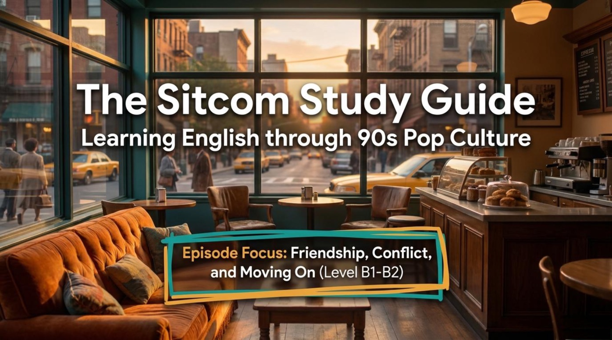
All six idioms from this article now live inside Friends Vocab Arcade — six playable reels with gap-fills, meaning matches, REAL-or-DELUSION reflexes, a detective quiz, and one timed bonus shift behind Gunther’s counter. Stars and best scores are saved between visits, and every reel is open from the very start, in any order.
PLAY FRIENDS VOCAB ARCADE ▶6 reels · 5 mechanics · synthesized sound · opens in a new tab
Great sitcoms rarely tell one story at a time. The guide opens with a corkboard titled Three Stories, One Episode, and it pins up three separate plots that braid into a single half hour of television. Notice how all three plots test the same theme — independence versus connection — from three different directions.
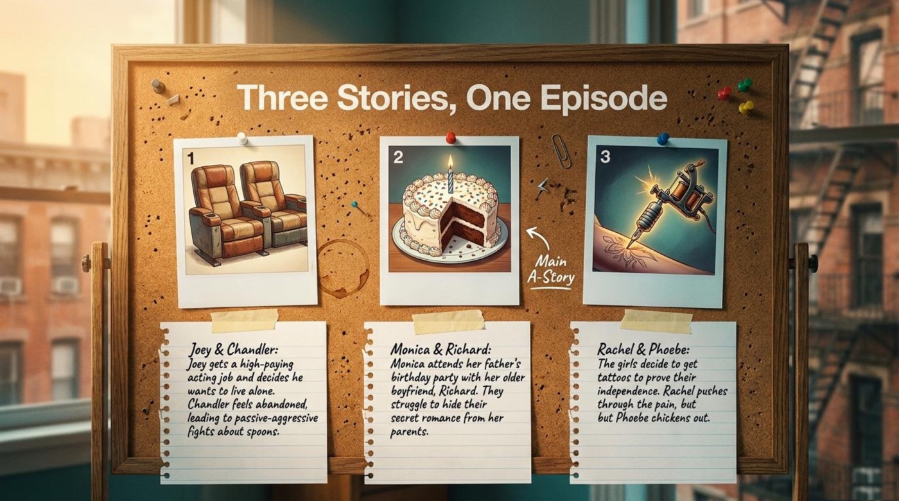
A high-paying acting job convinces Joey to live alone. Chandler responds with passive-aggressive warfare over licked spoons.
Main A-Story. A secret older boyfriend meets the parents at a birthday party, and the gossip machine starts before the cake is cut.
Two tattoos to prove independence. One friend endures the needle; the other leaves with a freckle-sized planet.
The guide sums up the first storyline in one dry sentence: “Joey gets a high-paying acting job and decides he wants to live alone. Chandler feels abandoned, leading to passive-aggressive fights about spoons.” Every word there is doing language work: a high-paying job pays very well, to be abandoned means to be left behind, and passive-aggressive describes anger that comes out sideways — through slammed doors and dirty looks instead of honest sentences.
The episode condenses all of that pain into a bathroom argument, and the guide preserves the dialogue in full:
“Well don’t you see how gross that is? I mean that’s like you using my toothbrush.”
“Well, that was only ’cause I used the red one to unclog the drain.”
Pay attention to what is missing from this exchange. Neither line mentions sadness, fear, or the end of an era; both characters talk about bathroom equipment while the real subject — the friendship — stays safely off stage. The guide names the pattern directly under the heading The Roommate Rift: “As Joey prepares to leave, the best friends stop acting like adults. Instead of talking about their feelings, they fight over hygiene.”
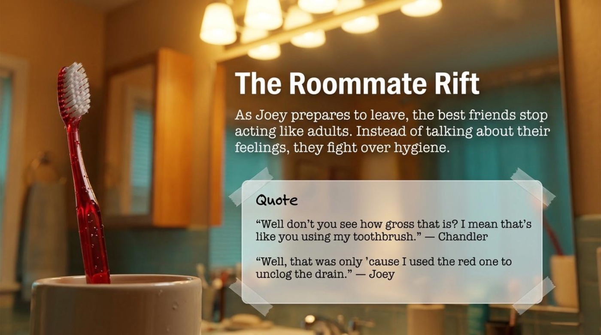
💡 Practical advice: when you listen to native speakers argue, separate the literal topic from the emotional topic. The literal topic here is dental hygiene; the emotional topic is I will miss you and I do not know how to say it. Training your ear to hear both layers at once is one of the fastest ways to move from textbook English to real English.
The second storyline belongs to the oldest characters in the room. In the guide’s words: “Monica attends her father’s birthday party with her older boyfriend, Richard. They struggle to hide their secret romance from her parents.” The corkboard marks this plot with a handwritten arrow labeled Main A-Story, which signals that this storyline receives the most screen time.
A secret romance at a family party is a perfect listening exercise, because the dialogue runs on two channels at once. On the surface, the guests exchange polite small talk about cake; underneath, Monica’s mother launches into gossip about Richard’s mysterious new girlfriend. The guide saves the juiciest vocabulary from that gossip for its cultural context page, which appears in the vocabulary act below.
💡 Practical advice: family-party scenes are gold mines of indirect speech — hints, loaded pauses, and polite remarks that mean the opposite of what they say. Shadow the scene out loud, copying the rhythm of the small talk, and the intonation patterns of polite English will start to feel automatic.
The third storyline is the smallest in scale and the biggest in symbolism. The guide introduces it like this: “Rachel and Phoebe try to prove they are the ‘boss of themselves’ by getting tattoos.” In the plot summary, the outcome is stated with comic precision: “Rachel pushes through the pain, but Phoebe chickens out.”
The phrase boss of themselves is wonderfully informal English for self-determination — being the person who gives the orders in your own life. One friend turns that phrase into a permanent mark on her body; the other turns it into a tiny dot and a creative excuse. Both reactions, as the next act will show, come wrapped in idioms that native speakers use every week.
The guide adds a psychological note that ties Joey’s storyline together. Under the heading Psychology: Retail Therapy, it explains the concept in plain terms: “Retail Therapy (Shopping to make yourself feel happier when you are sad or stressed).” The context is more touching than funny: “Joey grew up in a loud house with seven sisters, then lived with Chandler. He has never lived alone. When he gets his own apartment, he acts like an irresponsible child, spending exorbitant money on flashy decor to fill the empty space and feel less alone.”
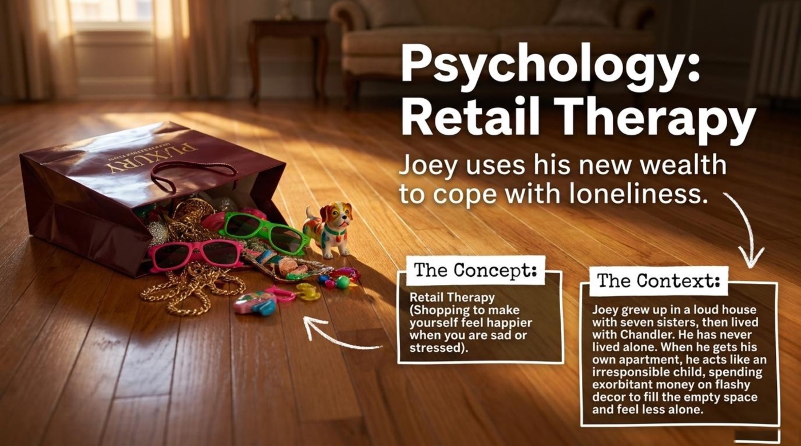
That paragraph reframes the whole episode. Joey’s spending is not a gag about a silly rich actor; it is a portrait of a man trying to purchase his way out of loneliness. The guide’s psychology pages reward learners who read beyond the jokes, because emotional vocabulary — loneliness, coping, abandonment — is exactly the vocabulary that everyday conversation demands.
Each Vocab Spotlight page in the guide follows the same teaching rhythm: The Quote, The Definition, and How to Use It. That three-step format — see the phrase in the wild, learn the precise meaning, then produce your own sentence — mirrors how vocabulary actually sticks. Copy the format onto index cards, and it will serve long after this episode fades.
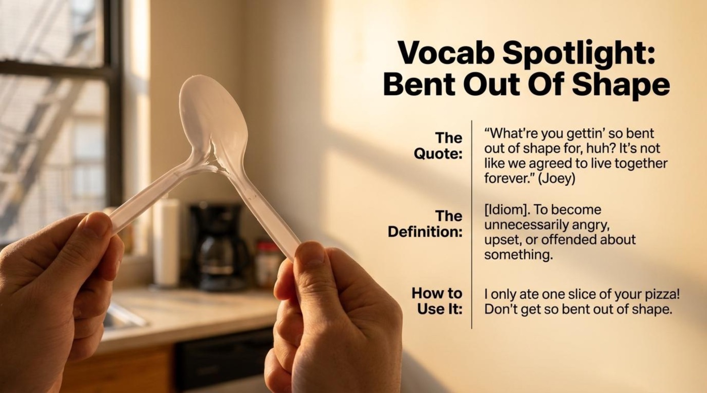
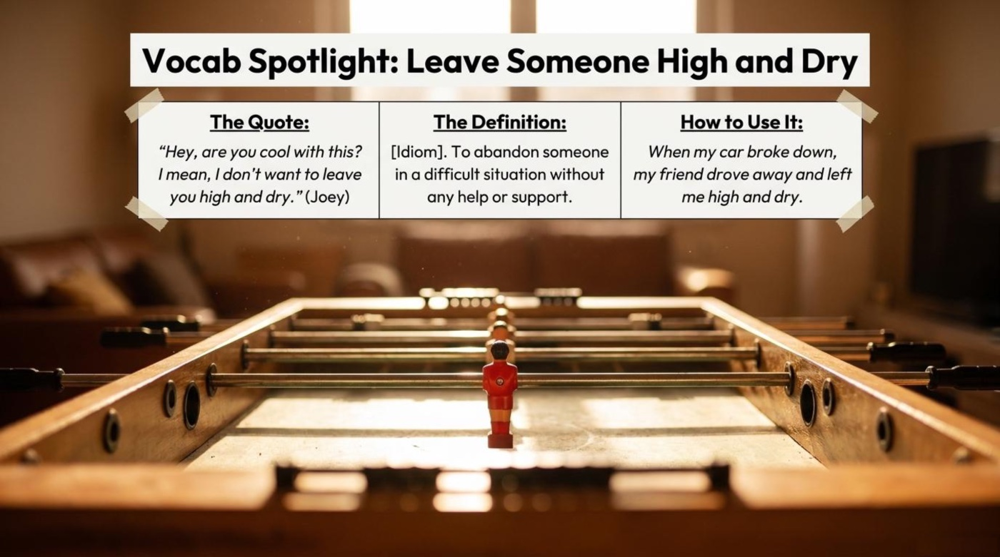
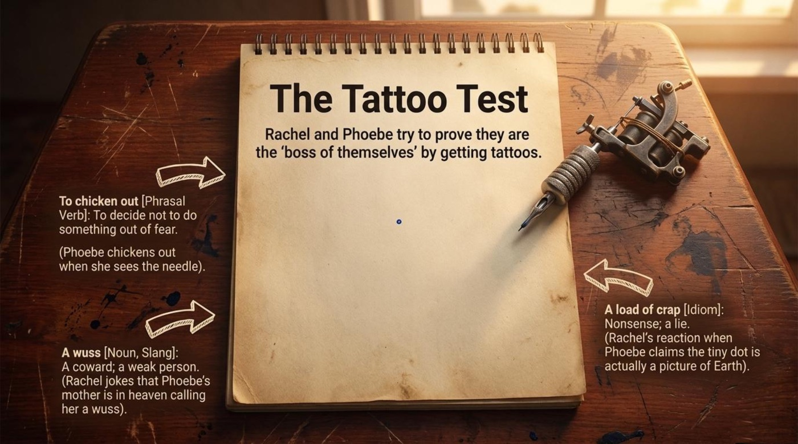
⚠️ Register warning: affectionate teasing between old friends is safe ground for wuss; a meeting room or a first conversation is not.
⚠️ Register warning: keep a load of crap for informal company. In professional settings, a load of nonsense or that sounds like baloney carries the same meaning without the risk.
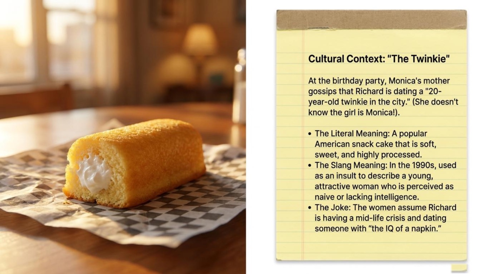
🎯 Interactive flip-cards. The six core idioms below are packaged as flip-cards. The front shows the term, its part of speech, and a one-line hook; the back holds the literal picture, the contextual meaning, a quote from the material, and a note on why the phrase matters. Click or tap a card, press Enter or Space after tabbing to it, or turn the whole deck over at once with the button.
The most interesting pages of the guide are the ones that stop talking about grammar altogether. On them, the objects in two apartments — a toothbrush, a stack of plastic spoons, a foosball table, a ceramic dog — turn into a psychological map of the episode. Reading symbols is also a reading skill in English: film essays, art reviews, and even sports commentary all rely on the verb to symbolize and the language of imagery.
The guide poses the puzzle in its own way — two grown men, one licked spoon, one enormous argument — and then dismantles the scene row by row. The middle rows are the heart of the lesson:
“Surface Level (What they say): Chandler is disgusted by Joey’s unsanitary habits. Joey is defensive.”
“Deeper Meaning (What they feel): The pair is having shallow, superficial arguments to avoid discussing the pain of separation.”
Notice the two-column logic: surface level versus deeper meaning, what they say versus what they feel. This is also exactly how misunderstandings work between real people in a second language — the words on the surface are easy to translate, while the feeling underneath them never is.
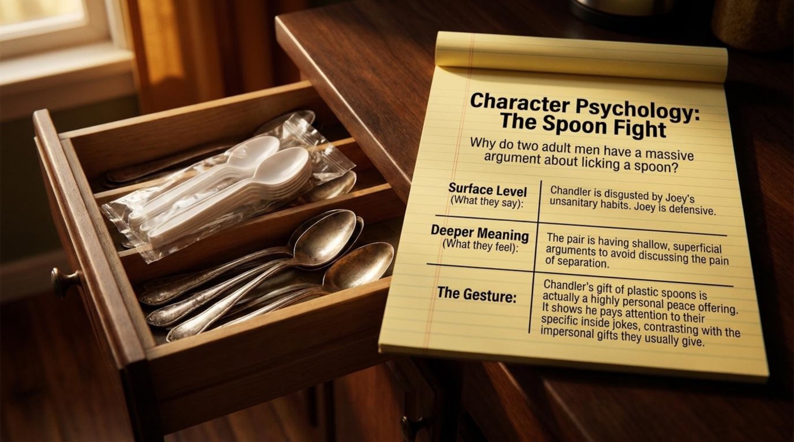
The third row of that page delivers the emotional payoff of the whole storyline: “Chandler’s gift of plastic spoons is actually a highly personal peace offering. It shows he pays attention to their specific inside jokes, contrasting with the impersonal gifts they usually give.”
A peace offering is a gift meant to end a quarrel, and an inside joke is a joke only insiders understand. By replacing silver with plastic, Chandler proves that he has been paying attention all along — to the fights, to the jokes, and to the friendship. The guide’s interpretation turns a throwaway prop into the emotional thesis of the episode: intimacy is built out of tiny shared details.
The object symbolism page sets two apartments side by side and reads them like texts. About the beloved wooden foosball table, the guide writes: “Material: Wood (Warm, durable, lived-in). Function: A game played by two people. Symbolizes: Shared connection, friendship, and personal hobbies. A commitment to living together.” About the giant white ceramic dog in Joey’s new place: “Material: Plastic/Ceramic (Cold, cheap, flashy). Function: A giant, lifeless object that takes up space. Symbolizes: Isolated freedom. White signifies purity and new beginnings. It is an object, not a real pet — showing Joey is not ready for real commitment yet.”
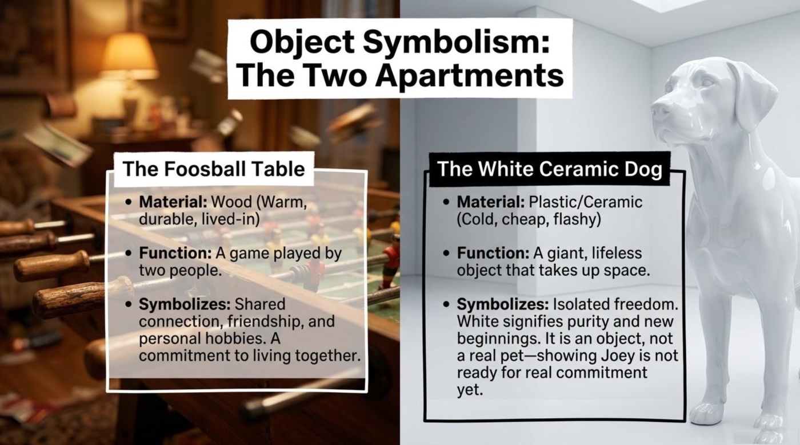
The comparison teaches a transferable skill: symbolism reads objects through three questions of method — what is it made of, what does it do, and what does it stand for. Warm wood versus cold ceramic, a game for two versus an object for one: the décor tells the story before any character opens their mouth.
The smallest symbol in the episode is a dot of ink the size of a freckle. Phoebe, who fled the needle, declares that her micro-tattoo is “actually a picture of Earth,” and Rachel dismisses the claim as “a load of crap.” The guide’s annotation lets the exchange speak for itself, and the symbolism is generous: a person who could not face the needle renames her fear as cosmic art. Everyone recognizes the move, because everyone has done a version of it — revising an embarrassing retreat into a story with better lighting. The dot becomes the episode’s gentlest joke about pride, and a perfect conversation starter about the excuses people invent.
The guide closes its lesson with a worksheet titled Comprehension Check and a simple instruction: “Test your understanding of the episode and vocabulary.” The interactive version below rebuilds that mental check with instant feedback, a live score, progress dots, and an explanation for every answer. Several statements are deliberately worded to catch overconfident readers, so read each one twice before committing.
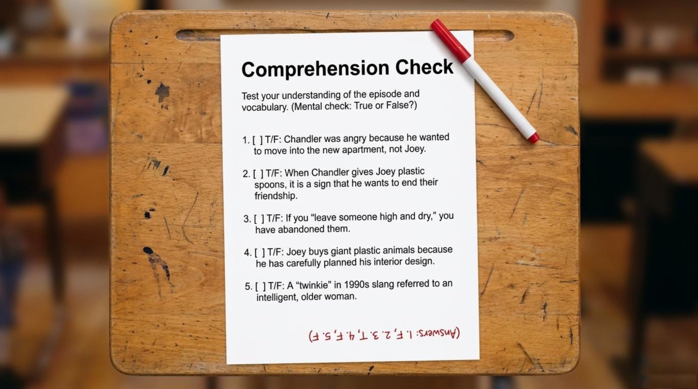
The final page of the guide swaps comprehension for conversation, and its instruction doubles as the best study plan in the whole packet: “Bring these questions to your next English practice group or language exchange!” The three conversation topics it offers — written on a napkin, naturally — turn the episode’s themes into personal stories waiting to be told.
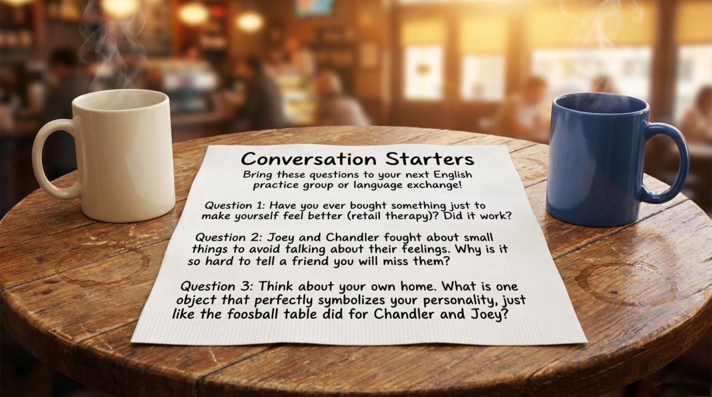
The main takeaway of the material is quiet but firm: English is not a list of definitions, it is a set of feelings that found words. Idioms like bent out of shape or high and dry stick because they are attached to moments — a spoon, a toothbrush, a dot of ink. For readers who prefer a joystick to a highlighter, the golden banner near the top of this page leads to Friends Vocab Arcade — the same material, rebuilt as six playable reels with progress saved between visits. Rewatch the episode with the guide beside you, retake the quiz until the progress dots turn completely green, and then do the bravest thing in language learning: tell your own story out loud, in English, using at least one new idiom. The friends who listen will not grade you. They will simply understand you a little better — which is, in the end, what Chandler and Joey were fighting about all along.
The complete study guide used for this article is available below. The link opens the PDF in a new tab, so the coffee stays safely away from your keyboard.